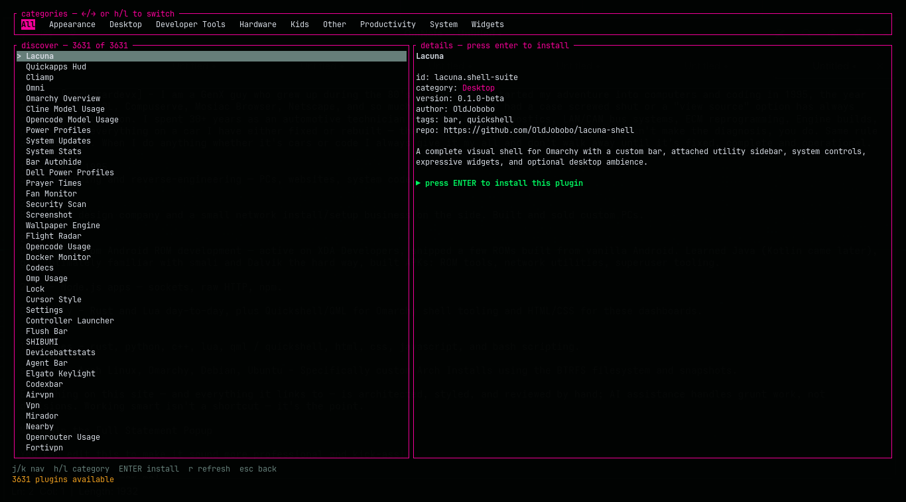
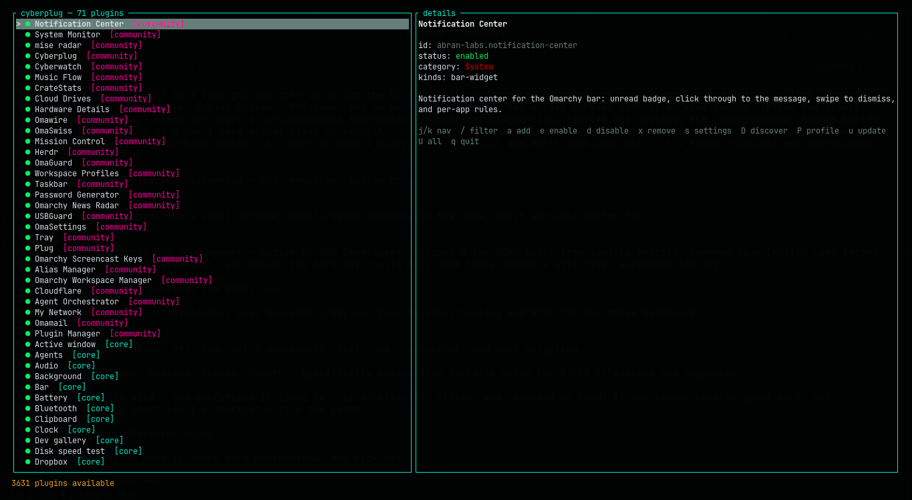
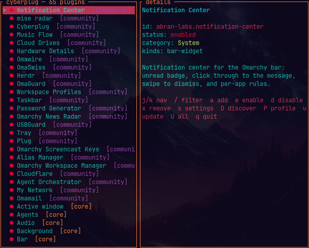

DISCOVER
Browse the live community registry by category, with a local cache so the screen stays useful when you are offline. Shift+D drops you straight in.
OMARCHY // QUATTRO SHELL // KEYBOARD FIRST
Cyberplug is a terminal plugin manager and bar widget for Omarchy. Browse the community registry, install what you need, and keep your desktop setup in a profile you can move.
cyberplug — installed
details — selected plugin
Unread badge, click-through messages, swipe-to-dismiss, and per-app rules for the Omarchy bar.
the control plane
Cyberplug wraps the real omarchy plugin CLI and gives every action a visible, reversible place in the TUI.
Browse the live community registry by category, with a local cache so the screen stays useful when you are offline. Shift+D drops you straight in.
Add from a Git URL, choose bar placement, enable, disable, configure, remove, or update without leaving the keyboard.
Export or import the setup that makes your desktop yours. Rebuild the signal on another machine without remembering every plugin.
captured in the terminal
No dashboard cosplay. The split-pane TUI keeps the catalog, details, and next action in one glance.



the keyboard loop
Cyberplug is designed around the moment you notice a gap in your desktop. Find the plugin, make the change, keep working.
Click the plug icon in the Omarchy bar—or run cyberplug --discover.
Move through results, read the details pane, and see category, source, status, and description before committing.
Press Enter to install, then choose placement. The manager calls the real Omarchy plugin commands underneath.
Export a profile when the setup is right. Import it when the next machine needs the same signal.
boot sequence
Install the bar widget and manager from the checkout. The first click builds and caches the binary locally; it never downloads or executes a prebuilt artifact.
omarchy plugin add https://github.com/darkstardevx/cyberplug.git --enablePrefer the CLI? Install to ~/.local/bin ↗ · Read the architecture ↗